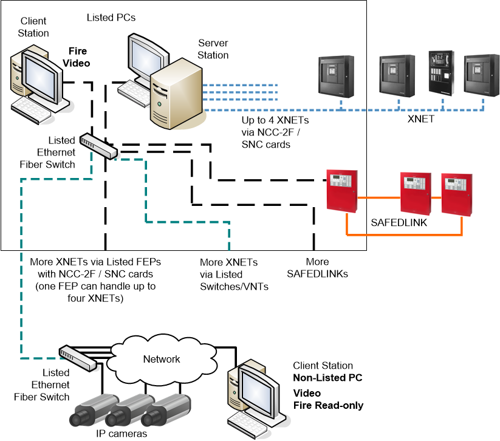
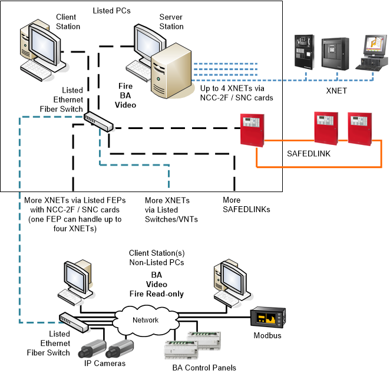
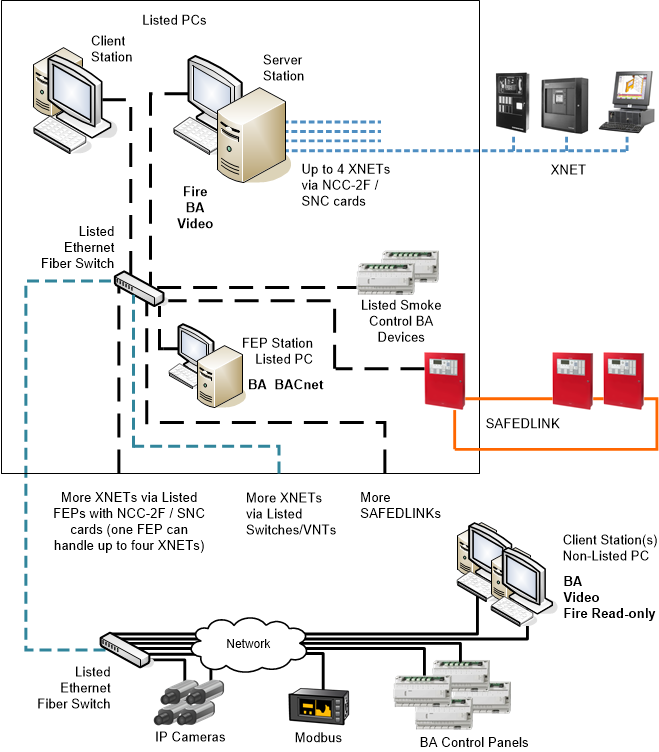
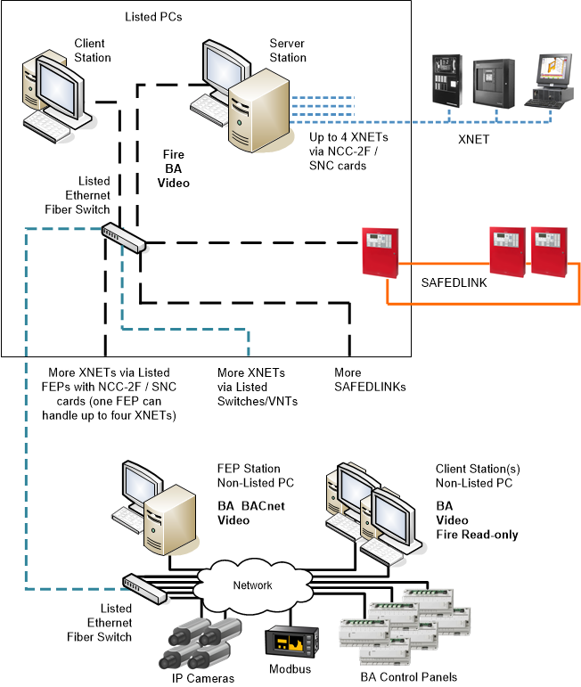
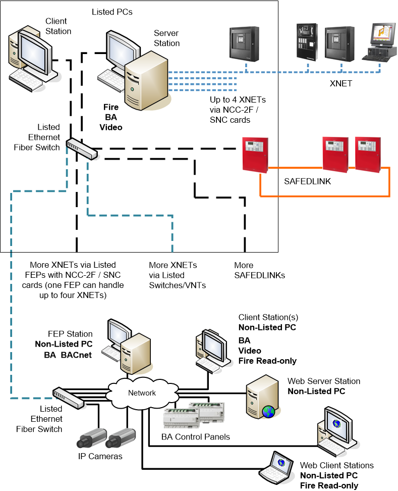
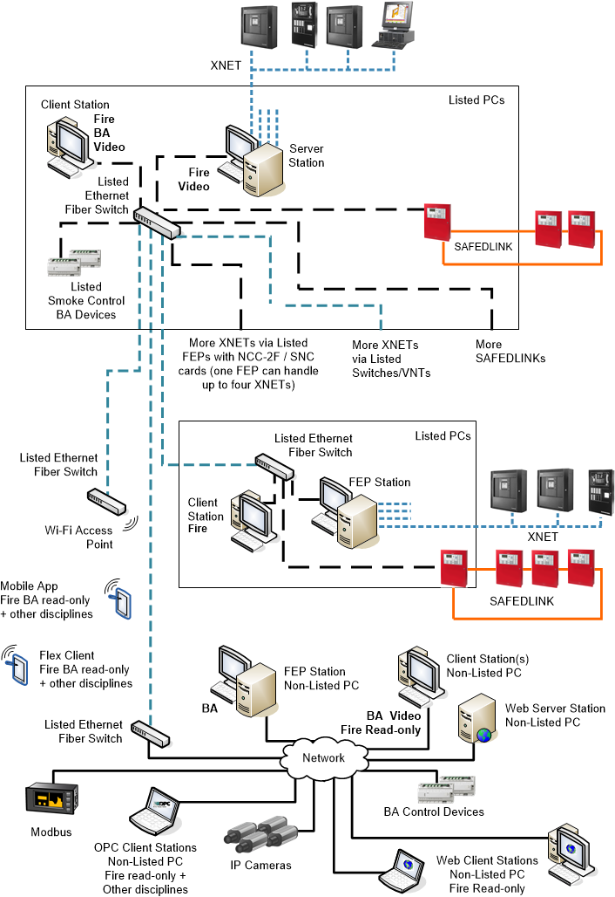
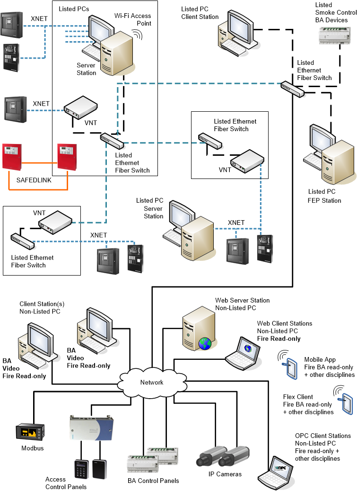
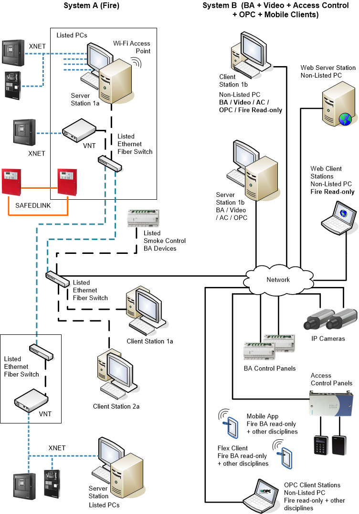

Total Building Solution Architectures with FS20/XNET
Total Building Solution (TBS) architectures include both Fire as well as Building Automation (BA) and Video networks to provide for a complete building management.
As for Desigo CC, these architectures can be implemented with stand-alone management stations and client/server systems, possibly including web-based remote connections. The possible configurations are presented in the following examples.
TBS architectures can include single or multiple fire networks.
As far as multiple FC20 and XNET connections are concerned, beyond the overall system limits, the same rules, limits, and principles apply on each connection as for the single-network architectures. See also UL/ULC Compliance: SAFEDLINK Network Limits.
NOTE: No Request/Grant/Deny (RGD) mechanism can occur to exchange control between local management stations. For each ULC-compliant fire network, the control on the fire system is assigned to the management station associated to the local control panel that has the control on the voice system.

In the following figures, the Listed PC and network devices should comply with requirements described in:
- Management Station Hardware in UL Fire Systems
- Management Station Hardware in ULC Fire Systems
- Hardware Requirements for UL Norms Compliance
- Hardware Requirements for ULC Norms Compliance
Conduits: Local connections must comply with UL 864 10th edition, and specifically to sections 50.3 exception 1 and 56.1.2 f.
Copper-based wiring must be enclosed in listed conduits within 20 ft (UL) or 18 m (ULC).
TBS Management Station Architecture with Fire, BA, and Video Networks
Video and building automation networks can also be included and connected to the same Fire server, handling a single network (FCnet/SAFEDLINK or XNET) or both types of fire networks.
The fire section of the system must comply with the UL 864 / ULC S527 requirements, whereas video and BA networks can include any network components.
Compliant fire stations can provide for building automation and video functions, and additional client stations that are not part of the approved system can be added to support BA, Modbus, and video functions.
Fire system information can be seen on such stations, but no fire control commands can be executed.

| Units installed in the same room within 20 ft (UL) or 18 m (ULC) from each other |
| Ethernet wiring within 20 ft (UL) or 18 m (ULC) in UL/ULC listed conduits |
| Ethernet over Fiber optic cable (Single mode or Multi mode), connected in Style4/ Class B or Style7/Class X |
| XNET: Style 4/Class B or Style 7/Class X RS-485 |


NOTE: Style 4/Class B = DCLB; Style 7/Class X = DCLC
TBS Management Station Architecture with FEP Stations and Fire, BA, Modbus, and Video Networks
Large fire and building automation solutions including BACnet networks for both FS20 and APOGEE units may require separate BACnet connections, and can be supported using a FEP station. See also UL/ULC Compliance: SAFEDLINK Network Limits.
The main server provides the BACnet communication for the FCnet/SAFEDLINK fire network, whereas the building automation makes use of the FEP station that handles an additional BACnet interface, as well as Video and Modbus connections.

| Units installed in the same room within 20 ft (UL) or 18 m (ULC) from each other |
| Ethernet wiring within 20 ft (UL) or 18 m (ULC) in UL/ULC listed conduits |
| Ethernet over Fiber optic cable (Single mode or Multi mode), connected in Style4/ Class B or Style7/Class X |
| XNET: Style 4/Class B or Style 7/Class X RS-485 |
NOTE: Style 4/Class B = DCLB; Style 7/Class X = DCLC
TBS Management Station Architecture with internal FEP Stations and Fire, BA, and Video Networks
Large fire and building automation solutions including multiple BACnet networks may also support a UL 864/ULC S527-compliant FEP station for building automation BACnet communication as well as building automation compliant devices. Non-fire networks can be connected to support additional BA devices, Modbus, and Video.

| Units installed in the same room within 20 ft (UL) or 18 m (ULC) from each other |
| Ethernet wiring within 20 ft (UL) or 18 m (ULC) in UL/ULC listed conduits |
| Ethernet over Fiber optic cable (Single mode or Multi mode), connected in Style4/ Class B or Style7/Class X |
| XNET: Style 4/Class B or Style 7/Class X RS-485 |
NOTE: Style 4/Class B = DCLB; Style 7/Class X = DCLC
TBS Management Station Architecture with Remote FEP Station(s) and Fire, BA, Modbus, and Video Networks
Large fire and building automation solutions including multiple BACnet networks may also support a remote FEP station for video, Modbus, and building automation units.

| Units installed in the same room within 20 ft (UL) or 18 m (ULC) from each other |
| Ethernet wiring within 20 ft (UL) or 18 m (ULC) in UL/ULC listed conduits |
| Ethernet over Fiber optic cable (Single mode or Multi mode), connected in Style4/ Class B or Style7/Class X |
| XNET: Style 4/Class B or Style 7/Class X RS-485 |
NOTE: Style 4/Class B = DCLB; Style 7/Class X = DCLC
TBS Management Station Architecture with Web Stations and Fire, BA, and Video Networks
A web server station can provide a web-based access to remote stations. On the web-based clients, the user interface is implemented by active web pages and communication is based on web protocols.
These additional stations are not part of the UL 864 / ULC S527-approved systems and can be added for displaying (not commanding) the fire system and supporting other functions.

| Units installed in the same room within 20 ft (UL) or 18 m (ULC) from each other |
| Ethernet wiring within 20 ft (UL) or 18 m (ULC) in UL/ULC listed conduits |
| Ethernet over Fiber optic cable (Single mode or Multi mode), connected in Style4/ Class B or Style7/Class X |
| XNET: Style 4/Class B or Style 7/Class X RS-485 |
NOTE: Style 4/Class B = DCLB; Style 7/Class X = DCLC
Comprehensive Multi-discipline TBS Management Station Architecture
The following image presents a comprehensive TBS solution, including fire networks, video, building automation, and Modbus.
In this architecture, the list of stations includes the system server, enhanced by a BACnet FEP for building automation and by a web server, and various client, web-based, mobile (on Wi-Fi devices), and OPC client stations.

| Units installed in the same room within 20 ft (UL) or 18 m (ULC) from each other |
| Ethernet wiring within 20 ft (UL) or 18 m (ULC) in UL/ULC listed conduits |
| Ethernet over Fiber optic cable (Single mode or Multi mode), connected in Style4/ Class B or Style7/Class X |
| XNET: Style 4/Class B or Style 7/Class X RS-485 |
NOTE: Style 4/Class B = DCLB; Style 7/Class X = DCLC
Multi-discipline TBS Management Station Architecture with Access Control
The following image presents an additional TBS solution, including campus-wide fire networks, video, access control, and building automation. In this architecture, the list of stations includes a system server, enhanced by a BACnet FEP for building automation and by a web server, a local server on a remote XNET, and various client-, web-based–, mobile (on Wi-Fi devices), and OPC client stations.

| Units installed in the same room within 20 ft (UL) or 18 m (ULC) from each other. |
| Ethernet Wiring in listed conduits. |
| Single Fiber Optic (Style 4/Class B) or Dual Fiber Optic (Style 7/Class X). |
| Style 4/Class B or Style 7/Class X RS-485. |
Distributed Multi-discipline TBS Management Station Architecture
Large TBS solutions, including fire networks, video, access control, and building automation. may include multiple local systems in a distributed architecture. The list of stations includes multiple servers and FEPs, a web server, and various client-, web-based–, mobile (on Wi-Fi devices), and OPC client stations.

| Units installed in the same room within 20 ft (UL) or 18 m (ULC) from each other. |
| Ethernet Wiring in listed conduits. |
| Single Fiber Optic (Style 4/Class B) or Dual Fiber Optic (Style 7/Class X). |
| Style 4/Class B or Style 7/Class X RS-485. |